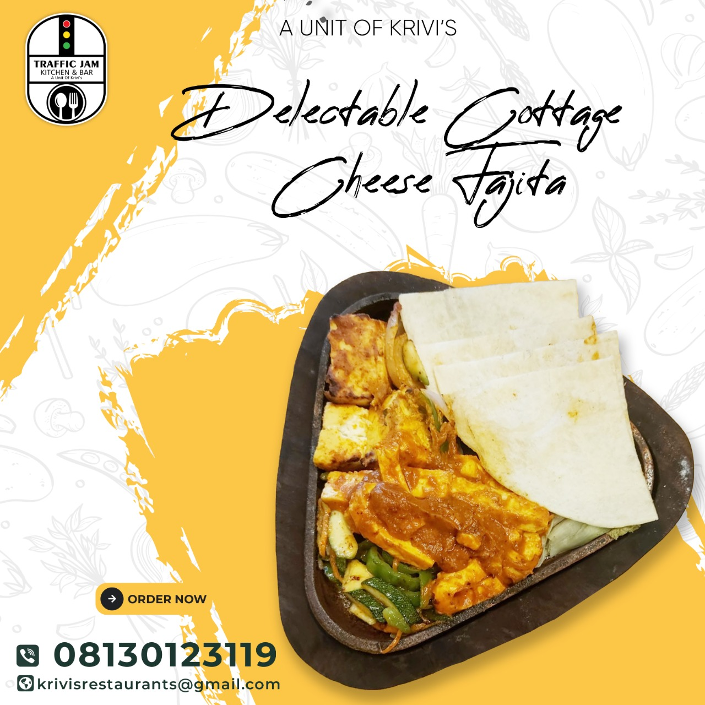

Traffic Jam Bar & Restaurant
KITCHEN is a one-of-a-kind culinary establishment with a menu inspired by the idea of simple and honest cooking. Starting in 2000, we developed a unique dining experience for all of our guests using fresh and sustainable ingredients—taking you on a culinary journey like no other.
From classic recipes to new-age kitchen adventures, each dish reflects our passion for high-quality food presented in a simple yet pleasing manner. Dive right in, and take a bite; join us today.
